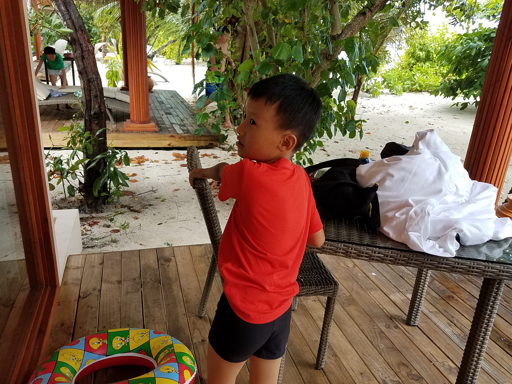
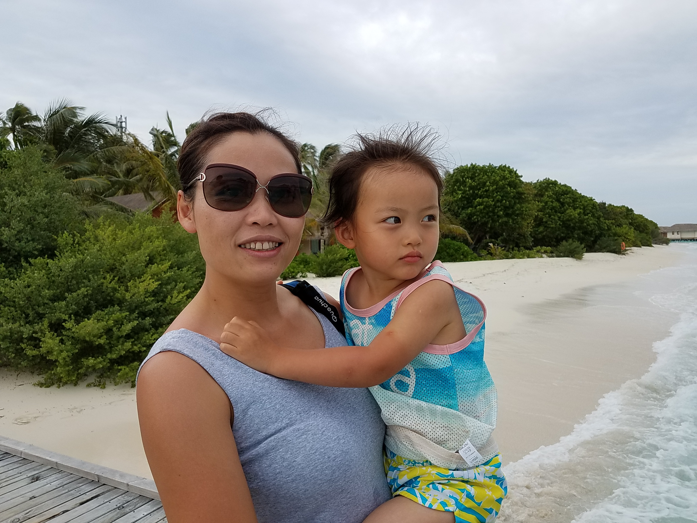
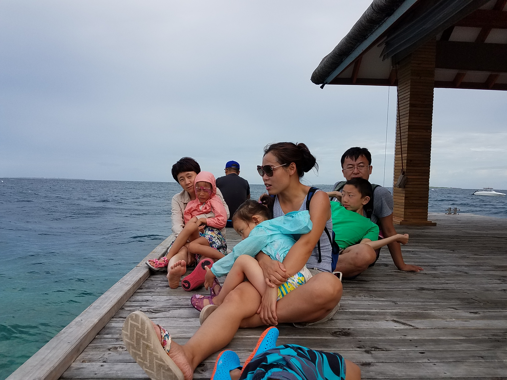
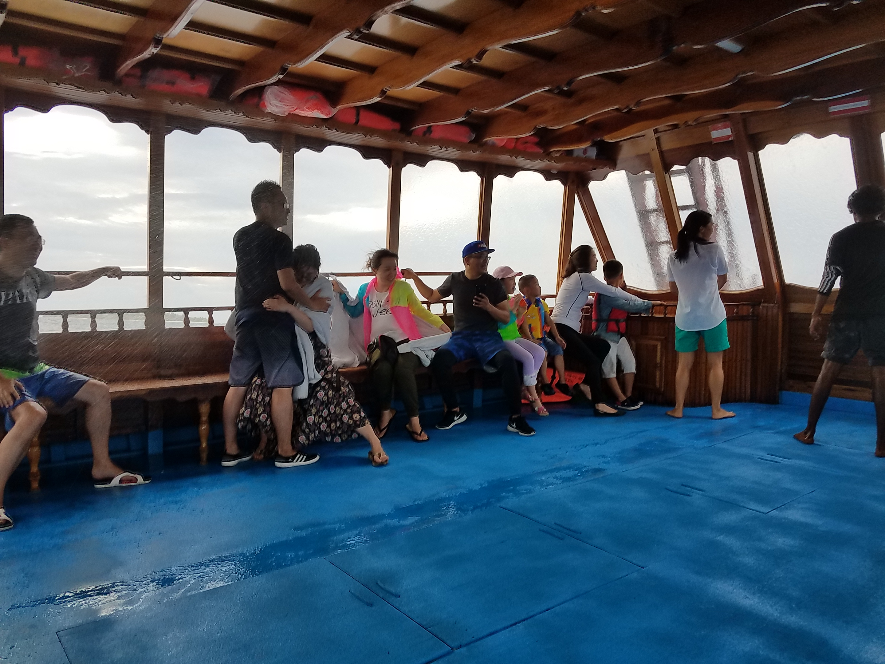

海岛时刻 Island Moments

木屋门口的回头一眼
2017.07.01
海岛木地板、树荫和白沙就在身后，小朋友扶着椅背回头看过来的那个瞬间，很像旅途中最自然的一次停顿。

风很大，怀抱很稳
2017.07.01
海边的风把头发吹乱了，但拥抱是安稳的。镜头里留下的不只是海景，还有一家人靠近彼此时的安心感。

码头边的集体歇脚
2017.07.01
大家并排坐在木栈道上，看海、吹风、聊天。旅行最珍贵的，常常就是这种没有安排、却很容易想起的片段。

突来的雨，也成了故事
2017.07.01
船舱里有点潮湿，有点匆忙，但每个人都在自己的位置上安顿下来。后来回看照片，反而觉得这段最有旅途感。

泳池边的小小休息站
2017.07.03
桌上摆满饮料，泳池在阳光下闪着光，小朋友吸着饮品偷偷看镜头。这一幕有夏天最具体的味道。

漂浮在蓝色午后
2017.07.03
泳圈、阳光、水面和孩子轻松的表情，让整个午后像被海水放慢了节奏。快乐在这种时候往往最简单。